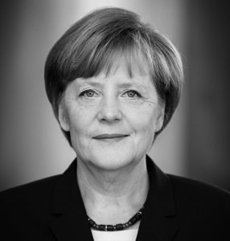
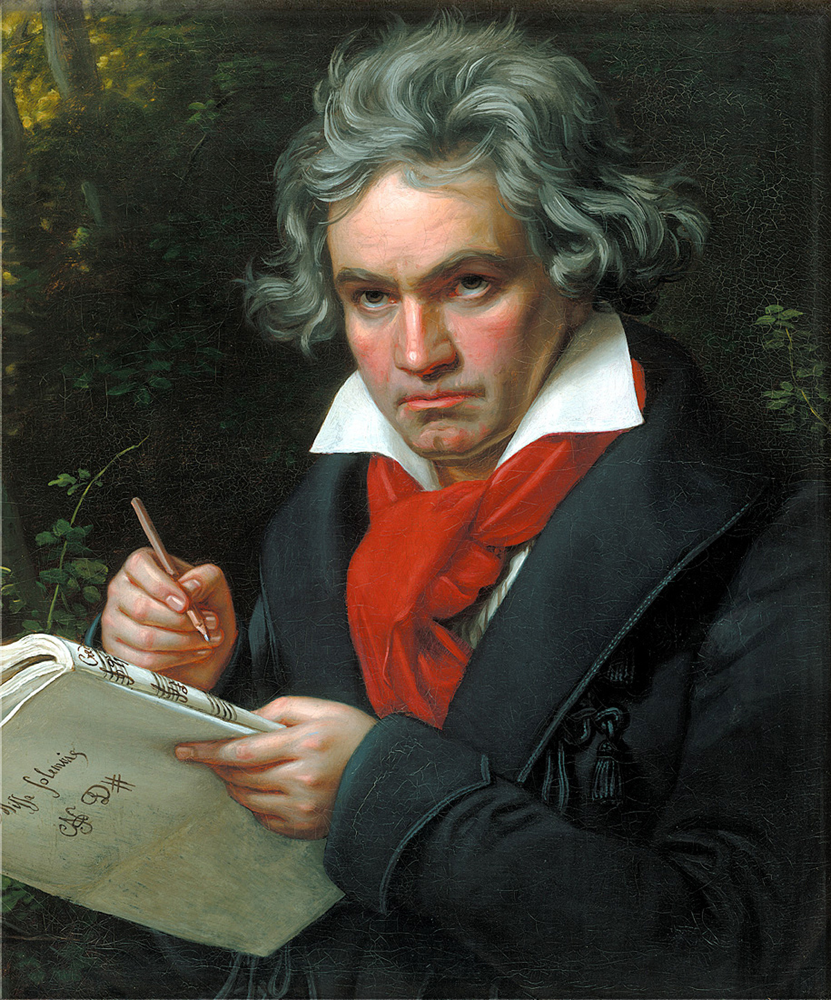
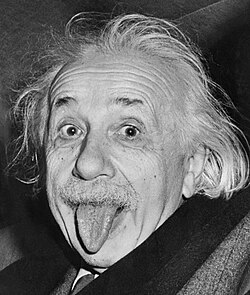
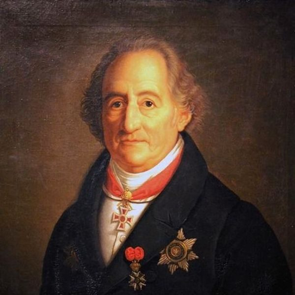
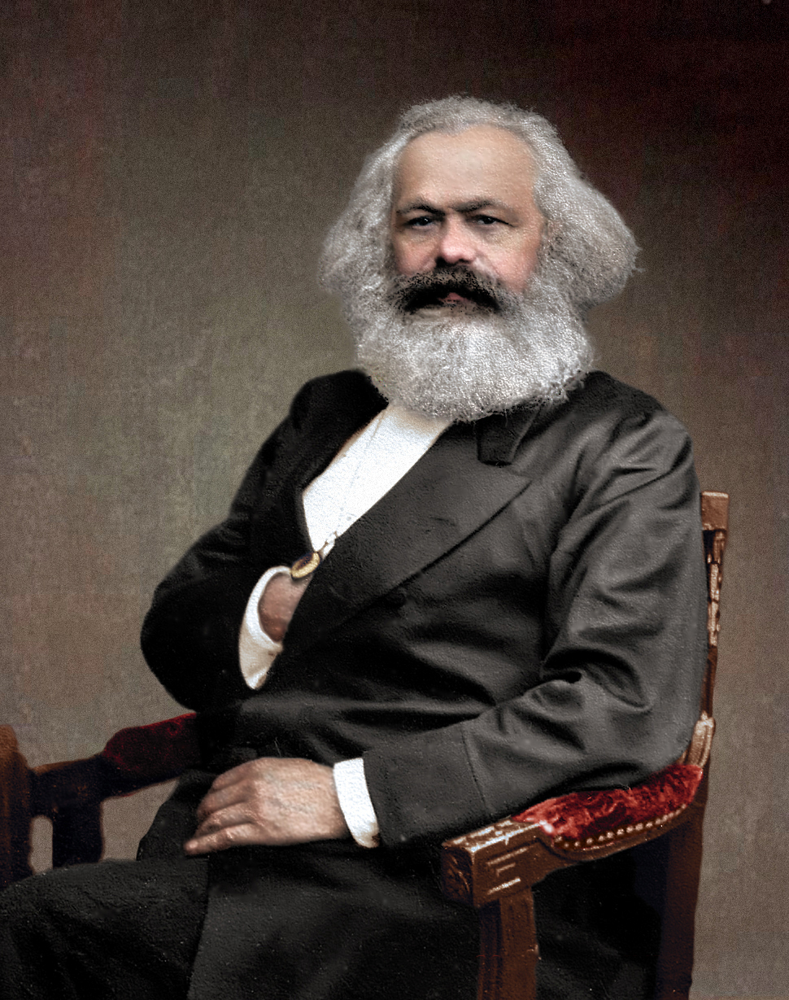

| FAMOUS PEOPLE | ||||||
| Home | Sports | Famous | Lenguge | Inicio | Inicio | Form |
 |
Angela Merkel (1954– ) |
.She was born in Hamburg and studied physics before entering politics. She served as Chancellor of Germany for 16 years. |
Achievements: She was the first woman to become Chancellor of Germany and a key leader in the European Union during economic and migration crises. | |||
 |
Ludwig van Beethoven (1770–1827) | He was a composer and pianist born in Bonn and is one of the most influential figures in classical music history. | Achievements: He composed nine symphonies, including the famous Ninth Symphony, and continued composing despite becoming almost completely deaf. |
|||
 |
Albert Einstein (1879–1955) | He was a theoretical physicist born in Ulm, Germany, and is considered one of the most important scientists in history. He later emigrated to the United States due to the rise of Nazism. |
Achievements: He developed the Theory of Relativity, won the Nobel Prize in Physics in 1921, and formulated the equation E = mc².
|
|||
 |
Johann Wolfgang von Goethe (1749–1832) | He was a writer, poet, and thinker born in Frankfurt and is considered the greatest figure in German literature. | Achievements: He wrote Faust, one of the most important works in world literature, and strongly influenced European literary movements. | |||
 | Karl Marx (1818–1883)
He was a philosopher, economist, and sociologist born in Trier, Germany. | Achievements: He wrote The Communist Manifesto and Das Kapital, and his ideas deeply influenced global politics, economics, and social theory. |
||||